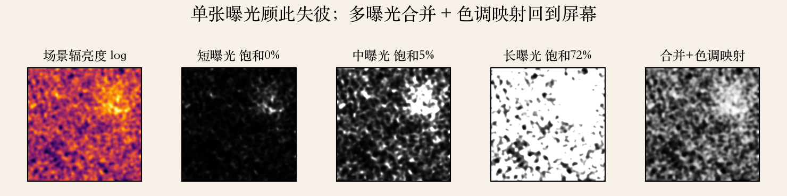
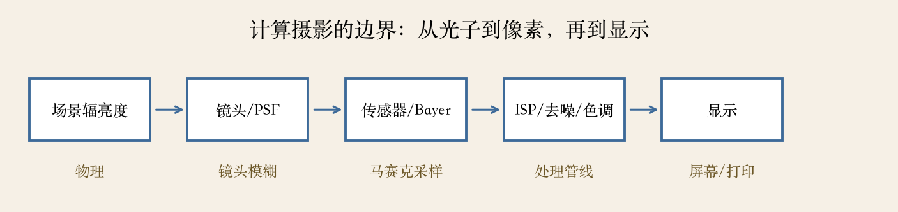
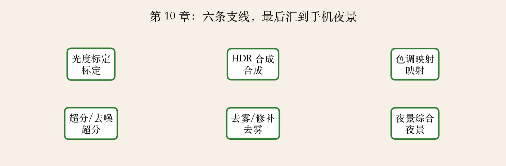

开场 · 第 10 章
软件也能参与成像
- 前面讲把画面摆正、把运动估出来。
- 这一章的主题是计算摄影。
- 手机夜景、HDR、人像虚化靠多拍再算。
- 章末回到一个具体案例：手机夜景。
依据：原书第 607–610 页
商业影响 · 原书第 609 页
计算摄影为什么重要
- 过去十年，商业影响可能是视觉里最大的。
- 把图像分析和处理算法用到一张或多张照片。
- 做出传统成像系统做不到的图像。
- 从全景拼接开始，手机一直在用多帧。
依据：原书第 609 页
成像管线 · 原书第 610 页
管线里每一步都能改
- 三个要标定的组件：辐射响应、暗角、PSF。
- 后面还有去马赛克、去噪、色调映射。
- 光子进镜头，变成数字，再被 ISP 加工。
- 标定量的是物理偏差，不是审美。
依据：原书第 610 页
动态范围 · 本集实验
一张照片装不下场景
- 合成场景动态范围约 1600:1。
- 短曝光暗部信噪比不到 1。
- 长曝光高光饱和 72%，中曝光饱和 5%。
- 8 位只有 256 级，两端总有一端断。
依据：本集实验
两个概念别混
动态范围：最亮比最暗
位深：能分多少级
单张照片顾此失彼
实验一 · 曝光序列
三张曝光各缺一块
- 曝光时间：半毫秒、五毫秒、五十毫秒。
- 短曝光保住高光，暗部全是噪声。
- 长曝光保住暗部，高光全白。
- 合并取各自可信的部分，再色调映射。
依据：本集实验

场景辐亮度/短曝光/中曝光/长曝光/合并与色调映射｜程序生成，未用教材或论文原图
HDR 合并 · 原书第 609 页
按信噪比和饱和加权
- HDR 用多张曝光捕获完整亮度范围。
- 权重看信噪比高、又没饱和。
- 三张曝光覆盖 100% 像素。
- 合并误差 0.50%，单张中曝光 0.82%。
依据：原书第 609 页；本集实验
理想上限
覆盖 100% 像素
辐亮度相关接近 1
真实相机还要对齐去鬼影
色调映射 · 原书第 609 页
把宽动态塞回屏幕
- 色调映射把高动态图像映射回普通显示。
- 合并后动态范围约 1600:1。
- 色调映射后压到 59:1。
- 代价是局部对比度被压。
依据：原书第 609 页；本集实验
不是简单 gamma
压缩动态范围
保住局部对比
屏幕只有几百比一
实验二 · 成像管线
五段管线，各管一段
- 场景辐亮度、镜头/PSF、传感器/Bayer。
- 再到 ISP/去噪/色调，最后到显示。
- PSF 决定锐不锐，Bayer 决定颜色。
- 第 10 章每一节都在修其中一段。
依据：本集实验

成像管线：场景辐亮度/镜头 PSF/传感器 Bayer/ISP/显示｜程序生成，未用教材或论文原图
下一集 · 光度标定
先量相机的性格
- 下一集讲辐射响应、噪声、暗角、PSF。
- 先知道相机把光变成数字的偏差。
- 后面合并、去噪、超分才有共同语言。
- 辐射响应是一条曲线，不是简单 gamma。
依据：原书第 610 页起
预告 · HDR 与色调映射
拿全信息，再放回屏幕
- HDR：多曝光对齐、去鬼影、辐射域合并。
- 色调映射：全局/局部算子、梯度域、显示。
- 移动物体不能直接按像素平均。
- 手持多曝光还要先做几何对齐。
依据：原书第 609 页起
两步都做对
HDR：把信息拿全
色调：把信息塞进屏幕
顺序不能反
预告 · 超分与去噪
多帧能白赚多少
- 超分辨率：插值、多帧、学习式放大。
- 去噪：高斯、双边、BM3D、神经网络。
- 同一曝光拍八张，单张约 25 分贝。
- 八张平均约 34 分贝，白赚近 9 分贝。
依据：本集实验
两条路
多帧超分靠亚像素位移
学习式超分靠先验
降噪上限看帧数和噪声
预告 · 去雾与修补
跟信息丢失打交道
- 去雾：暗通道先验、大气光、透射率。
- 修补：从扩散到样例，再到深度先验。
- 暗通道假设局部总有一个很暗的通道。
- 两者都可能编出不存在的内容。
依据：原书第 610 页起
各自做什么
去雾：扣掉散射光
修补：补出缺失像素
都不是万能的
预告 · 夜景综合
夜景是一条流水线
- 手机夜景：多帧对齐、降噪、HDR。
- 还有色调、去鬼影、超分。
- 任何一段拖后腿，最后都能看出来。
- 先对齐还是先降噪，结果不同。
依据：原书第 607–610 页
实验三 · 章节地图
六条支线汇到夜景
- 光度标定、HDR、色调映射。
- 超分/去噪、去雾/修补、夜景综合。
- 标定是前置，HDR 和去噪是信息源。
- 色调是出口，六条支线有依赖。
依据：本集实验

第 10 章六条支线：标定/HDR/色调/超分去噪/去雾修补/夜景｜程序生成，未用教材或论文原图
选型 · 三个问题
多帧、先验、给谁看
- 信息是多帧还是单帧？
- 先验是物理还是学习？
- 输出是给人看还是给测量？
- 给测量的图不要过度色调映射。
依据：本集实验；原书第 609 页
对应关系
多帧：噪声和动态范围
先验：病态问题
显示：好看
收束 · 下一集
第 10 章导览收束
- 计算摄影 = 多帧 + 物理 + 算法。
- 单张装不下动态范围，所以要多曝光。
- 多帧能降噪、能超分，但要对齐去鬼影。
- 下一集：辐射响应标定。
依据：原书第 607–610 页
下一集
量出相机的曲线
再谈合并与美化
第 10 章按顺序推进